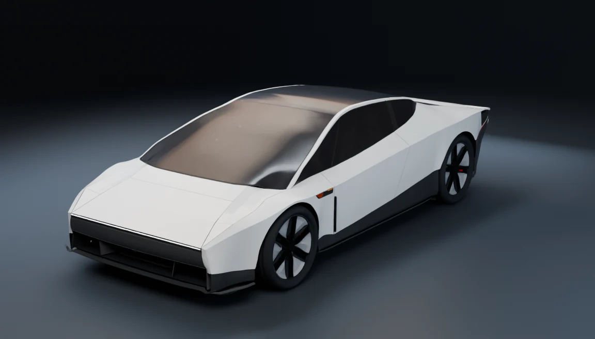

WATERTUBE
模型展厅
飞行试驾
装配动画
项目目录
Roadster
三维展厅
Performance
Thrust
Rocket

完整车身
座舱
机械内构
正在载入三维模型…
重试
前侧视角
正侧视角
后侧视角
俯视
底部视角
前舱近景
后电驱检修口
自由视角
拖动旋转 · 滚轮或双指缩放 · 点击选件
模型依据
车身、座舱和 Rocket 底部护板参考实车影像。整盖抬起用于检视前舱。隐藏紧固点、部件尺寸和另两款的共用底板布局按可见结构推定。
Top Gear 实车摄影 ↗
发布会实拍摘帧 ↗
Tesla 空力演示 ↗
Rocket 底部实拍 ↗
请启用 JavaScript 以操作模型。也可以
观看装配动画
。